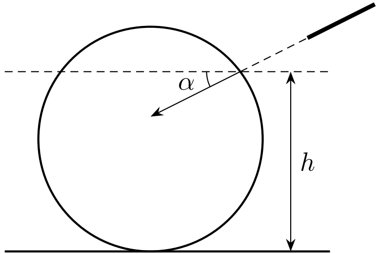
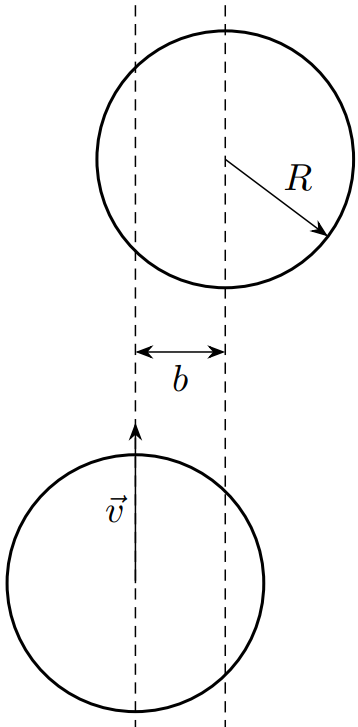
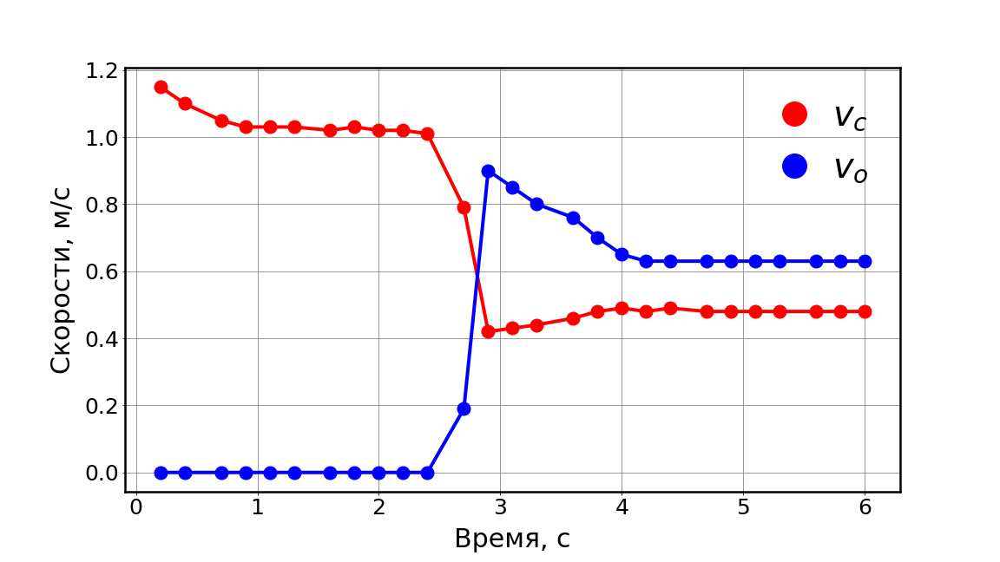

X20 (2020) — English translation
Billiards is the collective name for several board games with different rules in which the player uses a wooden rod - a cue - to move balls along the surface of the table. An experienced billiards player knows how important the physical characteristics of the balls and cues are to proper play and how the laws of physics can be used to your advantage during the game. In this problem we will explore some topics related to the physics of billiard balls. At all points, we consider the billiard ball to be a homogeneous body of radius $R$ with a moment of inertia $I=\frac{2}{5} mR^2$ about any axis passing through the center.
After hitting a ball with a cue, the ball may generally lose some of its initial speed while motion is established due to friction as it slips. However, good billiard players know the point (“sweet spot”), when hit, the ball will not lose speed while moving. We will assume that the impact on the ball is concentrated at a certain point at a height $h$ from the table; the cue is oriented at an angle $\alpha$ to the table surface ($-\pi/2\le\alpha\le\pi/2$, cm. Fig.). Consider that the force of the blow is such that for any $\alpha$ the ball does not come off the table. Friction on the surface can be neglected at this point.

This part of the problem considers the collision of two billiard balls. The friction between the balls during a collision can be neglected, and the impact is absolutely elastic. To begin with, let’s also neglect friction on the table. Let a billiard ball (“cue ball”) collide with the same one at rest with speed $\vec{v}$; the relative impact parameter (the value marked in the figure) is $\frac{b}{R}<2$.

The simple prediction made in the previous paragraph, often used as a rule of thumb by pool players, changes significantly when friction with the table surface is taken into account. Its influence on the movement of the cue ball is especially noticeable.
Let us turn to experimental data to test the models we have considered. Using high-speed photography, the time dependence of the speed of two colliding balls was obtained; on the graph, $V_c$ is the speed of the “cue ball”, $V_o$ is the speed of the initially stationary ball (object ball).

It is known that the force $F$ acting between two spherical bodies pressed against each other depends on the deformation (the distance at which the centers of the balls approach each other) $h$ as (Hertz formula) $$F=k\,E\,R^{\frac{1}{2}}h^{\frac{3}{2}},$$ где $k$ — численный коэффициент, $k\approx 1$, $E$ — модуль Юнга материала, из которого сделаны шары, $R$ - radius ball.
Source: https://pho.rs/p/14